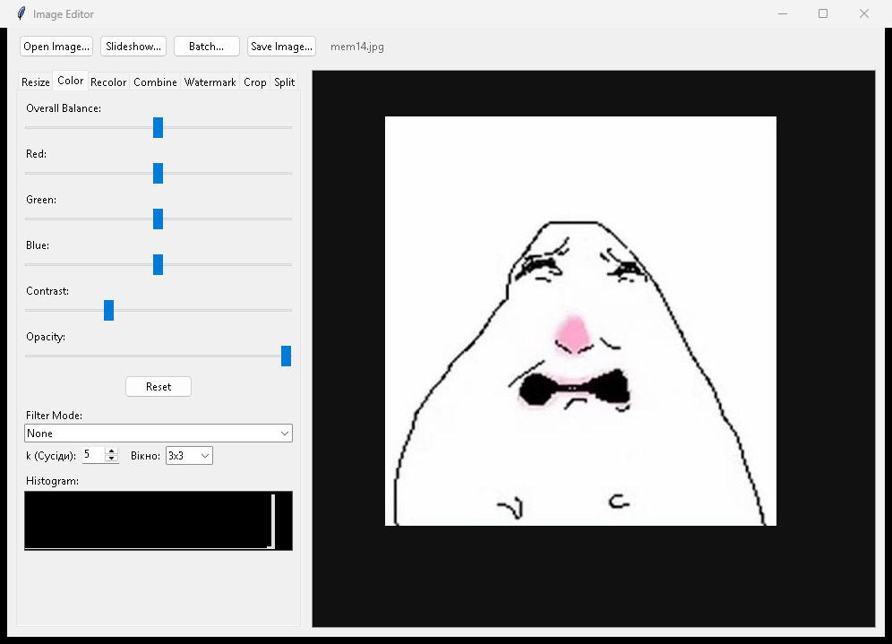
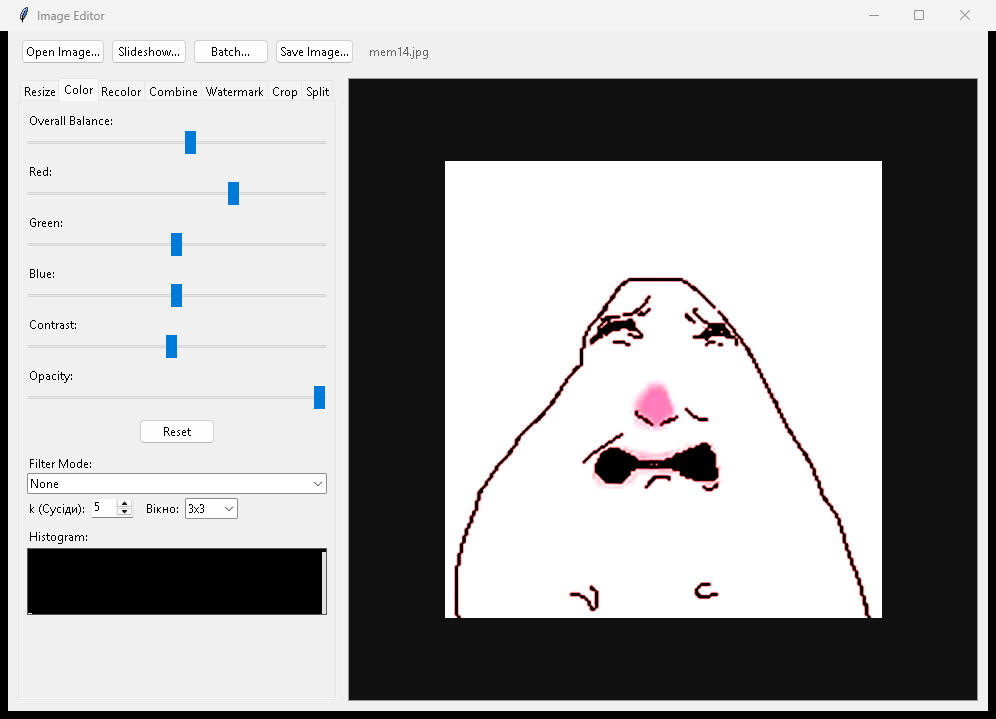
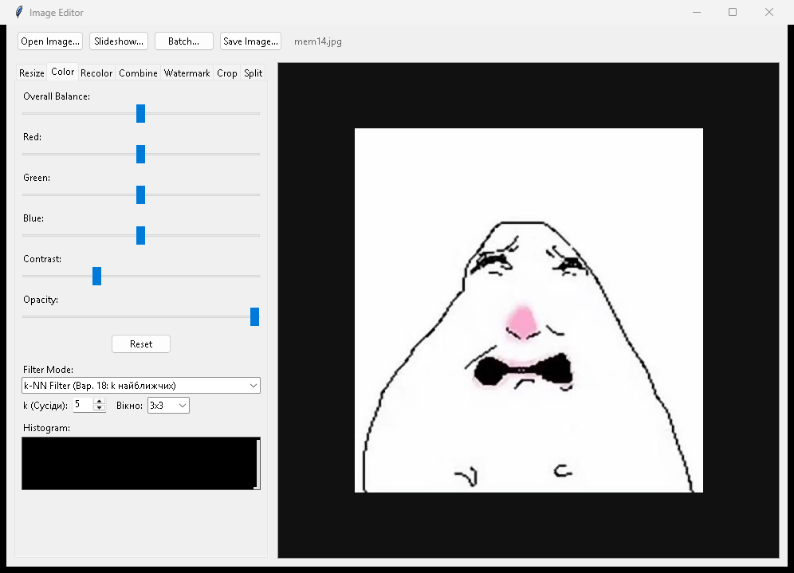
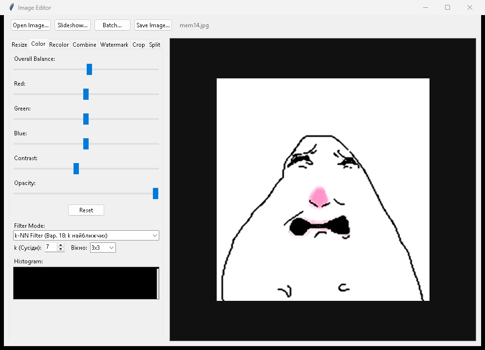

ЗВІТ
Тема: Фільтрація зображення. Реалізувати алгоритми, що дозволяють здійснити фільтрацію зображення, за варіантами: Оператор k найближчих сусідів (Варіант 18).
Тема: Фільтрація зображення.
Мета роботи: набути практичних навичок розробки алгоритмів просторової фільтрації зображень та побудови призначеного для користувача інтерфейсу для комплексного редагування графічних файлів.
Індивідуальне завдання (Варіант 18): Реалізувати просторову фільтрацію зображення за допомогою оператора k найближчих сусідів (k-NN filter).
Основні вимоги до програми:
У ході виконання лабораторної роботи було створено повноцінний графічний додаток Image Editor мовою програмування Python для інтерактивного редагування зображень та просторової фільтрації оператором k найближчих сусідів. Розробка включала такі етапи:
Оператор k найближчих сусідів (k-NN filter) належить до класу нелінійних рангових методів локальної просторової фільтрації зображень.
Фізичний зміст методу полягає у селективному осередненні: замість усереднення всіх точок ковзного вікна (як це робить класичний лінійний фільтр, що розмиває межі предметів), оператор аналізує фотометричну відстань між центральним пікселем P_center та кожним із його сусідів P_i: d_i = |P_i - P_center|.
З усього околу відбираються лише k сусідів, що мають найменшу різницю яскравості з центром. Якщо центральний піксель розташований поруч із контрастною гранню, сусіди, що знаходяться по інший бік межі, матимуть велику різницю d_i і будуть автоматично виключені з вибірки. Усереднюються лише точки тієї ж самої однорідної області, завдяки чому придушується шум при повному збереженні чіткості перепадів яскравості.
Оператор відрізняється високою стійкістю до шуму: завдяки адаптивному вибору k елементів, аномальні пікселі (шум типу "сіль та перець") не потрапляють у вибірку найближчих сусідів і повністю придушуються, не викликаючи розмиття контурів об'єктів.
Алгоритм повної конвеєрної обробки зображення (pipeline) складається з таких покрокових дій:
import os
import tkinter as tk
from tkinter import ttk, filedialog, messagebox
import numpy as np
from PIL import Image, ImageTk
from skimage.io import imread, imsave
# ==============================================================================
# ЛАБОРАТОРНА РОБОТА №5
# Варіант 18: Оператор k найближчих сусідів (k-NN filter) + Інтерфейс Image Editor
# ==============================================================================
def filter_knn(img: np.ndarray, k: int = 5, win_size: int = 3) -> np.ndarray:
"""
Варіант 18: Оператор k найближчих сусідів (k-NN filter).
Аналізує вікно win_size x win_size навколо кожного пікселя,
знаходить k сусідів, найближчих за яскравістю до центру,
і замінює центральний піксель їхнім середнім арифметичним.
"""
max_k = win_size * win_size
k = max(1, min(k, max_k))
r = win_size // 2
if img.ndim == 2:
h, w = img.shape
padded = np.pad(img.astype(np.float32), r, mode="edge")
windows = np.zeros((h, w, max_k), dtype=np.float32)
idx = 0
for dy in range(win_size):
for dx in range(win_size):
windows[:, :, idx] = padded[dy : dy + h, dx : dx + w]
idx += 1
center_idx = max_k // 2
center = windows[:, :, center_idx : center_idx + 1]
diffs = np.abs(windows - center)
part_idx = np.argpartition(diffs, kth=k - 1, axis=-1)[:, :, :k]
k_vals = np.take_along_axis(windows, part_idx, axis=-1)
res = np.mean(k_vals, axis=-1)
return np.clip(res, 0, 255).astype(np.uint8)
else:
res = np.zeros_like(img)
channels = min(3, img.shape[2])
for c in range(channels):
res[:, :, c] = filter_knn(img[:, :, c], k=k, win_size=win_size)
if img.shape[2] == 4:
res[:, :, 3] = img[:, :, 3]
return res
# ==============================================================================
# ГОЛОВНИЙ ДОДАТОК IMAGE EDITOR
# ==============================================================================
class AppLab5:
def __init__(self, root):
self.root = root
self.root.title("Image Editor")
self.root.geometry("980x680")
self.root.minsize(850, 600)
self.image_path = ""
self.source_image = None
self.processed_image = None
self.tk_preview = None
# 1. Верхній рядок кнопок дій
top_bar = ttk.Frame(root, padding=(10, 8, 10, 4))
top_bar.pack(fill=tk.X)
ttk.Button(top_bar, text="Open Image...", command=self.open_image).pack(side=tk.LEFT, padx=3)
ttk.Button(top_bar, text="Slideshow...", command=self._dummy_action).pack(side=tk.LEFT, padx=3)
ttk.Button(top_bar, text="Batch...", command=self._dummy_action).pack(side=tk.LEFT, padx=3)
ttk.Button(top_bar, text="Save Image...", command=self.save_image).pack(side=tk.LEFT, padx=3)
self.lbl_file_status = ttk.Label(top_bar, text="", foreground="#666")
self.lbl_file_status.pack(side=tk.LEFT, padx=10)
# 2. Основний горизонтальний спліт
content_frame = ttk.Frame(root, padding=10)
content_frame.pack(fill=tk.BOTH, expand=True)
# Ліва панель
left_panel = ttk.Frame(content_frame, width=320)
left_panel.pack(side=tk.LEFT, fill=tk.Y, padx=(0, 10))
left_panel.pack_propagate(False)
# Вкладки як у референсі
self.notebook = ttk.Notebook(left_panel)
self.notebook.pack(fill=tk.BOTH, expand=True)
tab_resize = ttk.Frame(self.notebook, padding=5)
tab_color = ttk.Frame(self.notebook, padding=8)
tab_recolor = ttk.Frame(self.notebook, padding=5)
tab_combine = ttk.Frame(self.notebook, padding=5)
tab_watermark = ttk.Frame(self.notebook, padding=5)
tab_crop = ttk.Frame(self.notebook, padding=5)
tab_split = ttk.Frame(self.notebook, padding=5)
self.notebook.add(tab_resize, text="Resize")
self.notebook.add(tab_color, text="Color")
self.notebook.add(tab_recolor, text="Recolor")
self.notebook.add(tab_combine, text="Combine")
self.notebook.add(tab_watermark, text="Watermark")
self.notebook.add(tab_crop, text="Crop")
self.notebook.add(tab_split, text="Split")
# Активна вкладка Color за замовчуванням
self.notebook.select(tab_color)
# Вміст вкладки Color (повзунки як у прикладі)
self._build_color_tab(tab_color)
# Права область: велике полотно попереднього перегляду
right_panel = ttk.Frame(content_frame)
right_panel.pack(side=tk.RIGHT, fill=tk.BOTH, expand=True)
self.preview_canvas = tk.Canvas(right_panel, bg="#111111", highlightthickness=1, highlightbackground="#999")
self.preview_canvas.pack(fill=tk.BOTH, expand=True)
# Автоматичне завантаження mem14.jpg якщо існує
if os.path.exists("mem14.jpg"):
self.load_image_file("mem14.jpg")
def _build_color_tab(self, parent):
# 1. Overall Balance
ttk.Label(parent, text="Overall Balance:").pack(anchor=tk.W, pady=(2, 0))
self.slider_balance = ttk.Scale(parent, from_=0.0, to=2.0, value=1.0, command=self._on_param_change)
self.slider_balance.pack(fill=tk.X, pady=(0, 4))
# 2. Red
ttk.Label(parent, text="Red:").pack(anchor=tk.W, pady=(2, 0))
self.slider_r = ttk.Scale(parent, from_=0.0, to=2.0, value=1.0, command=self._on_param_change)
self.slider_r.pack(fill=tk.X, pady=(0, 4))
# 3. Green
ttk.Label(parent, text="Green:").pack(anchor=tk.W, pady=(2, 0))
self.slider_g = ttk.Scale(parent, from_=0.0, to=2.0, value=1.0, command=self._on_param_change)
self.slider_g.pack(fill=tk.X, pady=(0, 4))
# 4. Blue
ttk.Label(parent, text="Blue:").pack(anchor=tk.W, pady=(2, 0))
self.slider_b = ttk.Scale(parent, from_=0.0, to=2.0, value=1.0, command=self._on_param_change)
self.slider_b.pack(fill=tk.X, pady=(0, 4))
# 5. Contrast
ttk.Label(parent, text="Contrast:").pack(anchor=tk.W, pady=(2, 0))
self.slider_contrast = ttk.Scale(parent, from_=0.1, to=3.0, value=1.0, command=self._on_param_change)
self.slider_contrast.pack(fill=tk.X, pady=(0, 4))
# 6. Opacity
ttk.Label(parent, text="Opacity:").pack(anchor=tk.W, pady=(2, 0))
self.slider_opacity = ttk.Scale(parent, from_=0.0, to=1.0, value=1.0, command=self._on_param_change)
self.slider_opacity.pack(fill=tk.X, pady=(0, 6))
# 7. Reset Button
btn_reset = ttk.Button(parent, text="Reset", command=self.reset_sliders)
btn_reset.pack(pady=(2, 8))
# 8. Filter Mode Dropdown
ttk.Label(parent, text="Filter Mode:").pack(anchor=tk.W, pady=(2, 0))
self.combo_filter = ttk.Combobox(
parent,
values=[
"None",
"k-NN Filter (Вар. 18: k найближчих)",
],
state="readonly"
)
self.combo_filter.current(1) # За замовчуванням варіант 18
self.combo_filter.pack(fill=tk.X, pady=(0, 4))
self.combo_filter.bind("<<ComboboxSelected>>", lambda e: self.apply_pipeline())
# Налаштування для k-NN (параметр k та розмір вікна)
f_sub = ttk.Frame(parent)
f_sub.pack(fill=tk.X, pady=(0, 4))
ttk.Label(f_sub, text="k (Сусіди):").pack(side=tk.LEFT)
self.spin_k = ttk.Spinbox(f_sub, from_=1, to=25, width=4)
self.spin_k.set("5")
self.spin_k.pack(side=tk.LEFT, padx=4)
self.spin_k.bind("<KeyRelease>", lambda e: self.apply_pipeline())
self.spin_k.bind("<<Increment>>", lambda e: self.apply_pipeline())
self.spin_k.bind("<<Decrement>>", lambda e: self.apply_pipeline())
ttk.Label(f_sub, text="Вікно:").pack(side=tk.LEFT, padx=(6, 0))
self.combo_win = ttk.Combobox(f_sub, values=["3x3", "5x5"], width=5, state="readonly")
self.combo_win.current(0)
self.combo_win.pack(side=tk.LEFT, padx=4)
self.combo_win.bind("<<ComboboxSelected>>", lambda e: self.apply_pipeline())
# 9. Histogram
ttk.Label(parent, text="Histogram:").pack(anchor=tk.W, pady=(4, 0))
self.hist_canvas = tk.Canvas(parent, height=65, bg="black", highlightthickness=1, highlightbackground="#555")
self.hist_canvas.pack(fill=tk.X, pady=(2, 0))
def _on_param_change(self, val=None):
self.apply_pipeline()
def reset_sliders(self):
self.slider_balance.set(1.0)
self.slider_r.set(1.0)
self.slider_g.set(1.0)
self.slider_b.set(1.0)
self.slider_contrast.set(1.0)
self.slider_opacity.set(1.0)
self.combo_filter.current(0) # None
self.spin_k.set("5")
self.combo_win.current(0)
self.apply_pipeline()
def open_image(self):
path = filedialog.askopenfilename(
filetypes=[("Зображення", "*.jpg *.jpeg *.png *.bmp *.tiff *.gif"), ("Усі файли", "*.*")]
)
if path:
self.load_image_file(path)
def load_image_file(self, path: str):
try:
self.image_path = path
self.source_image = imread(path)
self.lbl_file_status.config(text=os.path.basename(path))
self.apply_pipeline()
except Exception as e:
messagebox.showerror("Помилка", f"Не вдалося відкрити зображення:\n{e}")
def apply_pipeline(self):
if self.source_image is None: return
# Працюємо у float32
arr = self.source_image.astype(np.float32)
# 1. Застосування колірних повзунків (Overall Balance, R, G, B)
bal = float(self.slider_balance.get())
r_f = float(self.slider_r.get()) * bal
g_f = float(self.slider_g.get()) * bal
b_f = float(self.slider_b.get()) * bal
if arr.ndim == 3 and arr.shape[2] >= 3:
arr[:, :, 0] *= r_f
arr[:, :, 1] *= g_f
arr[:, :, 2] *= b_f
else:
arr *= bal
# 2. Контрастність
cnt = float(self.slider_contrast.get())
if cnt != 1.0:
ave = np.mean(arr)
arr = cnt * (arr - ave) + ave
# 3. Прозорість / Накладання (Opacity)
op = float(self.slider_opacity.get())
if op < 1.0:
arr = arr * op + 255.0 * (1.0 - op)
arr = np.clip(arr, 0, 255).astype(np.uint8)
# 4. Фільтр (Filter Mode)
mode = self.combo_filter.get()
try:
k_val = int(self.spin_k.get())
except ValueError:
k_val = 5
win_size = 5 if self.combo_win.get() == "5x5" else 3
if "k-NN" in mode:
# Варіант 18: фільтрація оператором k найближчих сусідів
filtered = filter_knn(arr, k=k_val, win_size=win_size)
else:
filtered = arr
self.processed_image = filtered
self._display_preview(filtered)
self._draw_histogram(filtered)
def _display_preview(self, img_data: np.ndarray):
cw = self.preview_canvas.winfo_width()
ch = self.preview_canvas.winfo_height()
if cw < 50 or ch < 50:
cw, ch = 600, 560
ih, iw = img_data.shape[:2]
ratio = min(cw / iw, ch / ih, 1.0)
nw = max(1, int(iw * ratio))
nh = max(1, int(ih * ratio))
pil_img = Image.fromarray(img_data)
if ratio < 1.0 or ratio > 1.0:
pil_img = pil_img.resize((nw, nh), Image.Resampling.BILINEAR)
self.tk_preview = ImageTk.PhotoImage(pil_img)
self.preview_canvas.delete("all")
self.preview_canvas.create_image(cw // 2, ch // 2, image=self.tk_preview, anchor=tk.CENTER)
def _draw_histogram(self, img_data: np.ndarray):
self.hist_canvas.delete("all")
hw = self.hist_canvas.winfo_width()
hh = self.hist_canvas.winfo_height()
if hw < 20 or hh < 20:
hw, hh = 280, 65
# Обчислення 64 бінів для швидкого малювання
if img_data.ndim == 3 and img_data.shape[2] >= 3:
gray = (0.299 * img_data[:, :, 0] + 0.587 * img_data[:, :, 1] + 0.114 * img_data[:, :, 2]).astype(np.uint8)
else:
gray = img_data
counts, _ = np.histogram(gray, bins=64, range=(0, 256))
max_c = np.max(counts) if np.max(counts) > 0 else 1
bar_w = hw / 64.0
for i in range(64):
bar_h = (counts[i] / max_c) * (hh - 4)
x1 = i * bar_w
y1 = hh - bar_h
x2 = x1 + bar_w
y2 = hh
self.hist_canvas.create_rectangle(x1, y1, x2, y2, fill="#e0e0e0", outline="")
def save_image(self):
if self.processed_image is None:
messagebox.showwarning("Увага", "Немає зображення для збереження!")
return
out_path = filedialog.asksaveasfilename(
defaultextension=".png",
filetypes=[("PNG", "*.png"), ("BMP", "*.bmp"), ("JPEG", "*.jpg"), ("Усі файли", "*.*")]
)
if out_path:
try:
imsave(out_path, self.processed_image)
messagebox.showinfo("Успіх", f"Зображення збережено:\n{out_path}")
except Exception as e:
messagebox.showerror("Помилка", f"Не вдалося зберегти файл:\n{e}")
def _dummy_action(self):
pass
if __name__ == "__main__":
root = tk.Tk()
app = AppLab5(root)
root.mainloop()
Рис. 1. Головне вікно редактора зображень Image Editor з панеллю повзунків та динамічною гістограмою

Рис. 2. Регулювання колірних характеристик повзунками (Red = 1.4, Contrast = 1.5, Overall Balance = 1.1)

Рис. 3. Застосування нелінійного просторового фільтра за варіантом 18 — Оператор k найближчих сусідів (k = 5, вікно 3x3)

Рис. 4. Адаптивна просторова фільтрація k-NN зі збільшеною апертурою вікна 5x5 та параметром k = 15
Рис. 5. Комплексна обробка зображення: комбінування фільтрації k-NN (k = 7, вікно 3x3) із корекцією контрастності (Contrast = 1.35)

Під час виконання лабораторної роботи було створено повноцінний графічний редактор зображень Image Editor на мові Python з реалізацією алгоритму просторової фільтрації за індивідуальним варіантом 18 — оператор k найближчих сусідів (k-NN filter).
У ході роботи розроблено зручний графічний інтерфейс користувача з інтерактивними повзунками керування загальним балансом яскравості, колірними компонентами R, G, B, контрастністю та прозорістю з динамічним оновленням гістограми в реальному часі. Реалізовано алгоритм фільтрації k-NN, який забезпечує ефективне згладжування флуктуацій яскравості та придушення шуму без деградації контурів об'єктів завдяки селективному відбору k найбільш схожих сусідів.